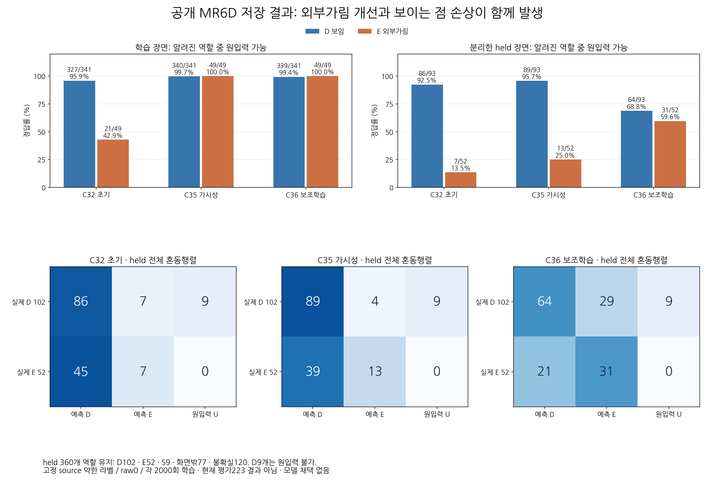
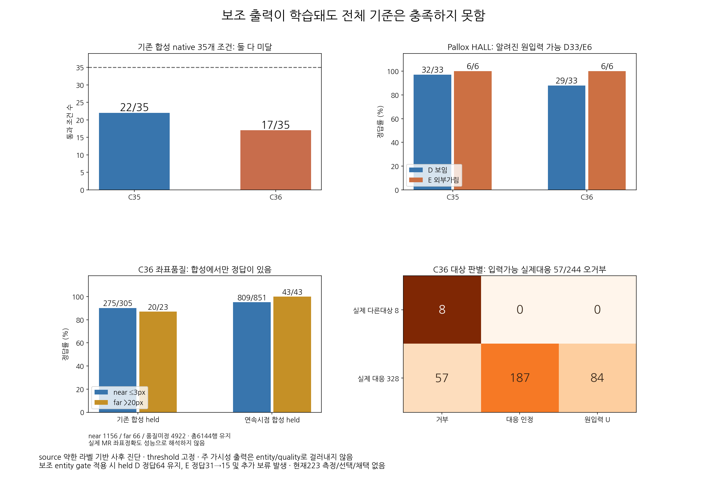
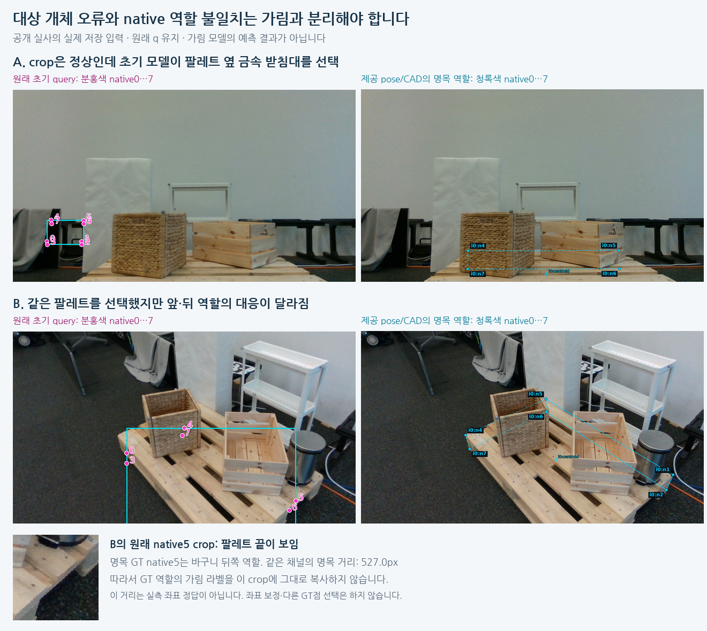

공개 팔레트 실사와 합성으로 작은 head 두 개를 실제 학습했다. 같은 공개 검증 장면의 가림/보임 점수 구분은 AUC 0.610→0.785로 좋아졌다. 보조 판단까지 함께 학습하면 가림 검출은 늘지만 보이는 점 손상이 커졌다.
V154 단계 완료 · 전체 목표 미해결 · 채택 모델 없음 · 사용자223 신규 평가 없음 · PnP 및 좌표 수정 없음
2026-10-23T22:37:46.503794+00:00 · JSON 전체 수치·근거 · 실제 학습 종료 기록
MR6D 공개230장(학습185·검증45)의 원래 추론 query1840개를 그대로 두고, 대상 개체 일치와 의미상 코너 역할을 따로 검토했다. 다른 물체를 잡은49프레임은 외부 가림 정답으로 만들지 않았다. 같은 물체여도 역할 대응이 불확실하면 U로 남겼다. 합성26624행·기존 공개 Pallox512행·MR1840행을 보존한 채 C35/C36을 각각2000 update 학습했다.
입력 encoder와 초기 추론은 기존 저장 결과를 재사용했다. 새로 학습한 것은224643개 파라미터의 head이며, 좌표를 예측하거나 옮기지 않는다. 가림, 대상 일치, 거친 좌표 품질의 세 출력은64차원 hidden을 공유한다. C35는 보조 손실0, C36은 두 보조 손실을 함께 추가한 대조다.
다음 recall은 입력 가능한 보임D93개·외부 가림E52개에서 계산했다. 표의 보류율은 입력 불가D9개까지 포함한 전체 알려진D/E154개 기준이다. 전체45장360행은 D102/E52/S9/화면밖77/U120으로 유지했다. S·화면밖·미확정206행을 가림 오답으로 재분류하지 않았다.
| 고정 모델 | 보이는 점 보존 recall | 외부 가림 recall | 외부 가림 precision | AUC | 전체 알려진 D/E 보류율 |
|---|---|---|---|---|---|
| 학습 전 C32 | 86/93 · 92.5% | 7/52 · 13.5% | 50.0% | 0.610 | 5.8% (9/154) |
| C35 가림 판단 학습 | 89/93 · 95.7% | 13/52 · 25.0% | 76.5% | 0.785 | 5.8% (9/154) |
| C36 대상·좌표 품질 보조학습 추가 | 64/93 · 68.8% | 31/52 · 59.6% | 51.7% | 0.702 | 5.8% (9/154) |
C32→C35에서는 보임 정답이3개, 가림 정답이6개 늘었다. 공통 합성·Pallox·MR 손실을 함께 계속한 결과로, MR 데이터만의 효과를 분리한 실험은 아니다. C35→C36은 두 보조 손실 추가의 공동 효과를 비교할 수 있으며, 가림18개 회복과 보임25개 손상이 함께 생겼다.

현재 점수 순서로 보임 recall90% 이상을 유지할 때 외부 가림 recall의 사후 최대치는 C32 12/52(23.1%), C35 16/52(30.8%), C36 15/52(28.8%)였다. 따라서 현재 source에서 보임90%·가림80%를 동시에 만족시키는 단일 문턱은 없다. 문턱 수치는 내보내거나 선택하지 않았으며, 모든 주 결과는 사전 고정 raw logit0 그대로다. 점수 순서·가능 범위 진단
C36은 다른 개체인 검증8개 query를 모두 거부했지만, 이8개는 단 한 프레임에서 나온 점들이다. 맞는 대상244개 중57개(23.4%)도 잘못 거부했다. 이 점수로 가림 판단을 보류시키면 맞게 검출한 가림31개 중16개가 빠져15개만 남는다. 전체 알려진D/E 보류는9/154→36/154로 늘어난다.
합성의 좌표 품질 검증에서는 큰 오차63/66, 작은 오차1084/1156을 맞혔다. 하지만 큰 오차로 분류한 것의 precision은63/135=46.7%이며, 나머지4922행은 품질 정답 미확정이다. 실제 공개 실사에는 정확한3px 좌표 품질 정답이 없다. 이 결과를 실사 위치 판별 성공으로 해석하지 않는다.
source native35개 기준 통과 수는 C35 22/35, C36 17/35로 둘 다 미달이다. 별도 Pallox HALL의 입력가능 보임도32/33→29/33으로 줄었다. 최종 채택은 없다.

아래 첫 두 줄은 target 코너가 외부 물체에 가려졌다는 약한E 라벨을 가지며, crop에는 상자·금속통이 크게 보인다. 가림 출력은 맞아도 대상 일치 출력이 이들을 다른 개체로 거부한다. 학습E49개는 모두 반복 추출되었고 거부된14개도 각각81–117회 노출됐다. 단순 누락은 아니며, 가림E가 entity 양성638개 중49개인 하위집단 불균형은 남아 있다.
세 번째 줄의 보임D 손상 두 사례는 원래 query가 기준 역할에서 명목144/193px 벗어나 있다. 역할의 보임과 query 중심 픽셀의 대상 존재가 서로 다를 수 있음을 보여준다. 제공 pose 자체가 부정확할 수 있으므로 이 거리로 실사 정답을 만들거나3px 평가를 대체하지 않는다.
전체 개체를 잘못 잡은 사례와, 같은 팔레트지만 native 역할 대응이 불확실한 사례도 따로 보존했다. GT와 가장 가까운 점으로 바꾸거나 순서를 재배열해 성능을 높이지 않았다.

가림·대상·품질 출력은 강하게 결합되어 있고 hidden도 공유한다. 두 보조 손실을 함께 더했을 때의 손상은 확인했지만, 특정 손실 하나가 원인인지 hidden 차원이 붕괴한 것인지는 아직 검증하지 않았다. 저장 출력 원인 진단 상세
시도할 근거는 있다. 같은 공개 held에서 추가 학습 후 점수 구분과 정답 수가 함께 개선됐다. 다만 아직 실사용 가능하다는 증거는 없고 성공 확률을 수치로 말할 근거도 없다. 공개 Euro 목재와 assistant 약한 라벨의 개선을 사용자 목재·정사각형 전체 성능으로 확대하지 않는다.
다음에는 저장 source 특징과 동결 head로 hidden·출력 결합을 확인하고, 대상 일치·좌표 품질의 내부 경로를 가림 판단 경로와 분리한 대조를 진행한다. 보조 손실의 gradient와 공통 clipping이 가림 경로를 바꾸지 않게 하는 것이 검증할 가설이다. 이 설계는 공개 source 결과에 근거해 미리 고정했고 아직 구현·학습하지 않았다. 다음 source 검증의 사전 약속
이번 C35/C36을 사용자223에 새로 평가하지 않았다. 최신 실제223 평가 포인터는 기존 V149 그대로다. 이번 공개 수치와 과거223 수치를 다른 분모인 채 직접 우열 비교하지 않는다. 사용자의223으로 학습·문턱·checkpoint·모델 선택은 하지 않는다. 기존 V149 평가 보고서
이미지는 실제 PNG를 확인했다. HTML은 로컬 링크와 구조를 검산했으며 브라우저 렌더링을 확인했다고 주장하지 않는다. 학습 종료의 PASS는 실행 무결성 검산이며 성능 기준 통과와 다르다.